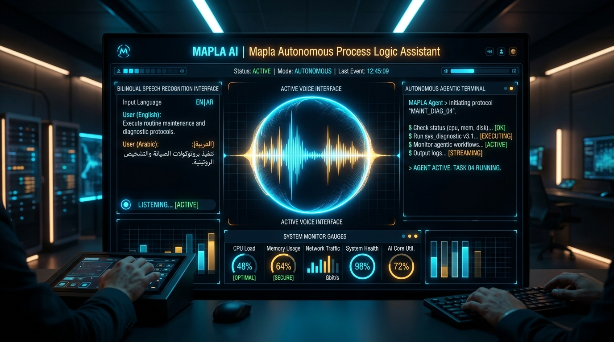

case study — flagship build
A complete voice-enabled Agentic AI Assistant built with React, Web Speech API (bilingual English & Tamil), Express, and local OS automation integration.

Engineered to give developers and users a natural voice interface in both English and Tamil (ta-IN) that autonomously triggers local operating system tasks, command execution, and real-time telemetry search.